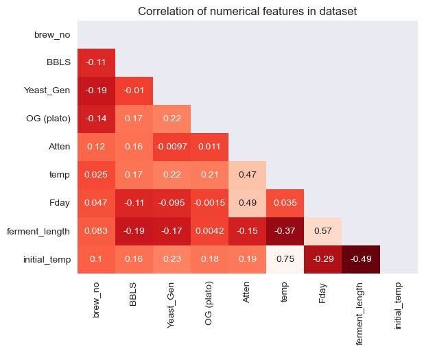

Solving fermentation delay
In Large Craft Brewery
In this project, I analyzed factors affecting fermentation time in a large scale craft brewery. In production brewing, variations in the length of fermentation time has numerous effects on not only the quality of the beer but also the production time from the beginning of the brewing process to delivery of the finished product.
The brewery in this project was having trouble with lagging starts at the beginning of the fermentation process. Initially, it seemed there was no indication as to which fermentations would start quickly and finish in time for scheduled delivery, and which ones would stall for a few days and cause delays in production.
In this analysis, I used Python’s pandas and seaborn libraries to explore the effects of temperature, yeast generation (number of re-uses) and tank size on fermentation lag to try to explain and correct what was causing the seemingly random delays.
Initial Data Source
Raw data was collected from multiple Excel spreadsheets spanning 6 years. Daily fermentation reports were released by the Brewery Laboratory in the form of a single Excel worksheet. Each worksheet was compiled into a quarterly Excel workbook separated into tabs labeled with each date.
Each tab from each excel file needed to be cleaned, uniformly formatted and concatenated into a single master dataset prior to analysis. This required extensive cleaning. Above the column headers, each sheet contained a row with the date that needed to be removed and some sheets had extra non-uniform columns that needed to be removed.
Additionally, since the individual sheets would be concatenated vertically together, each row needed its own date identifier in a designated date column.
I used python's OS and Pandas libraries to iterate through all the individual quarterly data files, removing the top row, resetting the column headers and selecting only the necessary columns. The result of each iteration was concatenated into a master pandas DataFrame. This DataFrame was then exported to an Excel File for data cleaning and analysis.
Below is example of one tab in one of the original data files and a snapshot of the resulting master dataset.
Data Cleaning and Feature Engineering
The master dataset required extensive cleaning to extract the information needed for analysis. Many of the columns contained multiple pieces of information in the format of a single string. Identifying characters were used to parse, split and index the strings to extract brew_no identifiers, initial brew dates, yeast generations and temperature information. Values were then converted from strings to either integers, floating point decimals or dates to be analyzed.
The 'Date/Brew#' column contains the date the tank was initially filled, and a range of brew numbers. The range of brew numbers included individual brew cycle identifiers consecutively filled into a single tank. The lowest brew number was chosen as the overall batch identifier. In the data, this information is entered with a # sign before the number. Each string was split on the # sign and the next 4 characters were selected as the brew number for the dataset.
The yeast column contained the source tank (P), the generation (G) and the source brew number id (#). Generations were extracted similar to the brew number, splitting on 'G' and returning 'G' + the resulting Gen number.
Due to a large number of typos and variation in formatting, the brew date was extracted by grouping the data by brew number and selecting the earliest value in the date column from each grouping instead of parsing the Date/Brew # column.
Exploratory Data Analysis
To answer our central questions about the problems with fermentation, it was first important to understand what a healthy fermentation and an unhealthy fermentation looked like. Examples of both were selected from the data and visualized. Ideal fermentations saw a quick drop in the specific gravity of the beer and finished within 4-5 days. Problematic fermentations showed little change in gravity for several days, followed by a slow drop and a long period of time to finish.
This brewery produced both Ales and Lagers. I chose to focus this analysis on Ales for several reasons. Ales made up 89% of the data as they were the primary style of product from the brewery. Ales and Lagers also ferment at different temperatures and in different amounts of time. Furthermore, in this brewery, Lagers were not presenting the same problems with delay as the Ales.
A distribution plot of the range of fermentation lengths for ales showed normal distribution of ferment lengths centered around the 5-6 day range.
Examining Possible Causes of Ferment Lag
I explored the correlation of different features in the dataset to Ferment length to find which relevant features had the biggest impact on the outcome. A heatmap of all feature correlations showed a strong negative correlation between the initial temperature of the fermentation and how long it would take to finish.

Further exploration showed initial temp, BBLS (tank size) and Yeast generation to be the top three largest correlations to ferment length so these features were chosen for the analysis.
Effect of Initial Temperature on Ferment Length
Overall, the data showed an general trend of lower initial temperatures resulting in longer fermentations and higher initial temperatures resulting in shorter fermentations.
The percent Attenuation (a measure of the fermentation progress) showed that low initial temperature had the most drastic effect during the first few days of fermentation, with lower temp beers seeing less attenuation on day 1 and 2 than higher temp beers. By day 4 most beers had shown an increase in attenuation. But the cooler starting temperature had led to a delay in the process.
Effects of Tank Size on Ferment Length
Brewing tanks were filled in 50bbl increments and tank sizes ranged from 50bbl (1 brew) to 400bbl (8 brews.) The brewing cycle was about 5 hrs. So in tanks with multiple brews, 50bbl was added to a tank every 5 hrs. Consequently, a 50bbl tank is filled in ~5 hrs and a 400bbl tank is filled in ~35hrs. Yeast was added during the first 50bbl filling cycle and typically, the conditions for fermentation to start were in place as soon as the first 50bbl fill was completed.
Here we examine the effect of larger tanks filled over longer periods of time on total fermentation time.

In this dataset, the Fermentation Day count begins after the final filling cycle. For larger tanks, this means the fermentation process has been started for nearly 30 hrs before the fermentation day count has even begun.
Multiple fills for larger tanks also allows not only time for temperature to adjust, but for brewers to compensate with warmer or cooler subsequent fills to adjust the overall initial temp inside the tank.
Although it appeared that larger tank size correlated with faster fermentations, domain knowledge showed that this correaltion did not indicate causation. Rather, the larger tanks essentially had up to a 30hr head start before fermentation time measurement began.
Effects of re-using Yeast on Ferment Time
Yeast is reused multiple times before fresh yeast is brought into the brewery. At the end of one fermentation, it is transferred from of a finished tank, into a new tank to start the next fermentation. Over time, the yeast can become worn out or mutate and produces varying effects on the finished product. Some possibly related to fermentation rate.
In this dataset, yeast generations (or number of re-uses) ranged from 1-11. The brewery in the analysis typically tried to phase out yeast around generation 6 and bring fresh yeast into the brewery. Consequently, we can see that there is very little data on yeast older than 8 generations as evidenced by the chart below.
For the purpose of this analysis, I chose to only include Generations 1-7 as a way to eliminate outliers in the data. An examination of different Yeast generations and their average length of fermentation, we can see that it appears to have little impact on the length.
Although Generation 3 showed the quickest average fermentations, all generations fell within the 7-8 day range. In the context of delaying delivery of product multiple days, this variation would be considered minimal and inconsequential.
Overall Conclusions
The initial temperature at the beginning of the fermentation day count was shown to have the biggest impact on how long the resulting fermentation process would take.
By raising the initial temperature of fermentation, we can increase the likeliness of a quick and healthy fermentation.
At the conclusion of this analysis, the brewery determined human error in regulating filling temperature was resulting in cooler than normal initial temperatures in some tanks. More emphasis was placed on correct fill temperature and production delays were minimized.